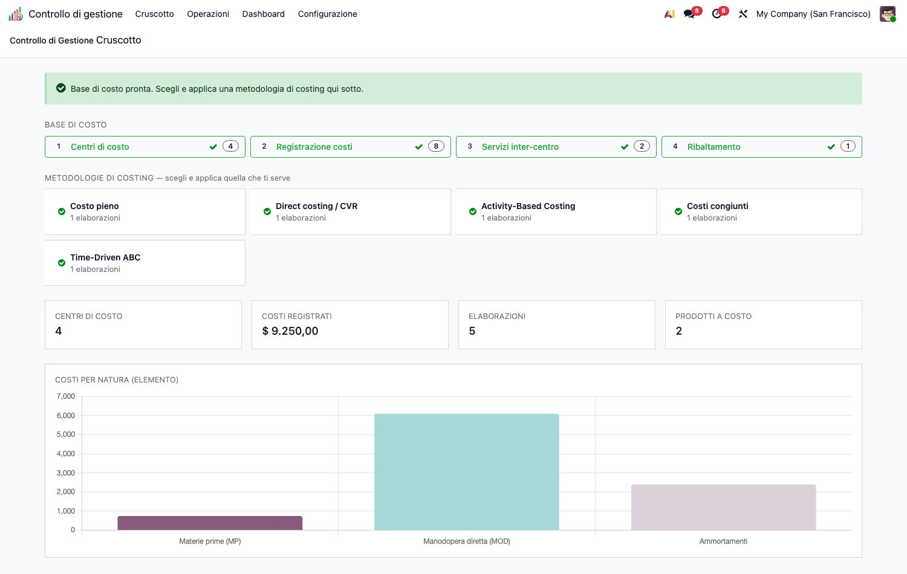

<section class="oe_container">
<div class="oe_row oe_spaced">
<div class="oe_span12">
<h1>CMC – Controllo di Gestione (cmc_base)</h1>
<p>Modulo <strong>core</strong> della suite CMC (Cost Management &amp; Controlling) per Odoo 19 Community. Applica i principi della contabilità analitica e del controllo di gestione. Tutti gli altri moduli della suite dipendono da questo.</p>
<h2>Obiettivo</h2>
<p>Costruire la <strong>base di costo</strong> su cui poggiano tutte le metodologie di costing:</p>
<ul><li><strong>Tassonomia dei costi</strong> (natura/elemento, comportamento fisso/variabile, diretto/indiretto) e <strong>oggetto di costo</strong> (speciale/comune, relativo al contesto).</li><li><strong>Centri di costo</strong> (finali, ausiliari, di periodo) sul piano analitico nativo.</li><li><strong>Ribaltamento</strong> dei centri ausiliari sui finali (diretto, step-down, reciproco con solver).</li><li><strong>Analisi di capacità</strong> con isolamento del costo della capacità inutilizzata (<em>idle cost</em>).</li><li><strong>Quadro di analisi dei costi</strong> (matrice centro × elemento) e <strong>cruscotto</strong> OWL di regia.</li></ul>
<p></p>
<h2>Configurazione (step-by-step)</h2>
<ol><li><strong>Installa</strong> <code>cmc_base</code> (le app capillari si installano sopra, quando servono).</li><li>Assegna all&#x27;utente il gruppo <strong>Controllo di gestione / Manager</strong> (o Utente) da</li></ol>
<p><em>Impostazioni › Utenti</em>.</p>
<ol><li>Vai in <strong>Controllo di gestione › Configurazione › Struttura dei costi</strong>:</li></ol>
<ul><li><strong>Elementi di costo</strong> (<em>Cost Elements</em>): crea la tassonomia per natura (es. Materie prime, Manodopera diretta, Ammortamenti). Marca come <em>figurativo</em> gli elementi che non transitano in co.ge. (es. interessi di computo).</li><li><strong>Cost Driver</strong>: crea le basi di ripartizione (es. <em>Ore macchina</em>, <em>Ore servizio</em>).</li></ul>
<ol><li>In <strong>Rilevazione costi › Base di costo › Centri di costo</strong> crea i centri e assegna il</li></ol>
<p><strong>Tipo di centro</strong> (finale / ausiliario) oppure marca <em>centro di periodo</em> per i costi che restano fuori dal ribaltamento (es. Commerciale).</p>
<p></p>
<h2>Utilizzo (step-by-step)</h2>
<ol><li><strong>Registra i costi</strong>: <em>Rilevazione costi › Base di costo › Registrazioni di costo</em> — ogni riga analitica porta centro, importo, comportamento ed elemento di costo.</li><li><strong>Servizi inter-centro</strong>: <em>Rilevazione costi › Base di costo › Servizi inter-centro</em> — dichiara le prestazioni dei centri ausiliari verso gli altri centri (provider → receiver, driver, quantità).</li><li><strong>Ribaltamento</strong>: <em>Rilevazione costi › Base di costo › Ripartizioni di costo</em> → nuovo record, scegli il <strong>Metodo</strong> (diretto / step-down / reciproco) e premi <strong>Calcola</strong>. I centri ausiliari si azzerano sui finali; la matrice centro × elemento viene generata.</li></ol>
<p></p>
<ol><li><strong>Capacità</strong>: <em>Analisi e decisioni › Analisi dei costi › Analisi di capacità</em> → inserisci capacità teorica, pratica e consuntiva del centro; il sistema isola il <strong>costo della capacità inutilizzata</strong> (costi fissi su base pratica).</li></ol>
<p></p>
<ol><li><strong>Cruscotto</strong>: <em>Cruscotto</em> (home della suite) mostra la pipeline della base di costo, le metodologie installate, i KPI e il grafico costi per natura. È il punto di partenza: completa la pipeline (Centri → Costi → Servizi → Ribaltamento), poi applica una o più metodologie di costing (moduli capillari).</li></ol>
<h2>Note</h2>
<ul><li>I centri di costo vivono sul <strong>piano analitico</strong> con colonna <code>account_id</code> (piano non-default).</li><li>Arrotondamenti a conservazione tramite <code>cmc_utils.largest_remainder</code> (usato da tutta la suite).</li><li>Il cruscotto rileva <strong>a runtime</strong> quali moduli capillari sono installati: mostra solo le metodologie effettivamente disponibili.</li></ul>
</div>
</div>
</section>
